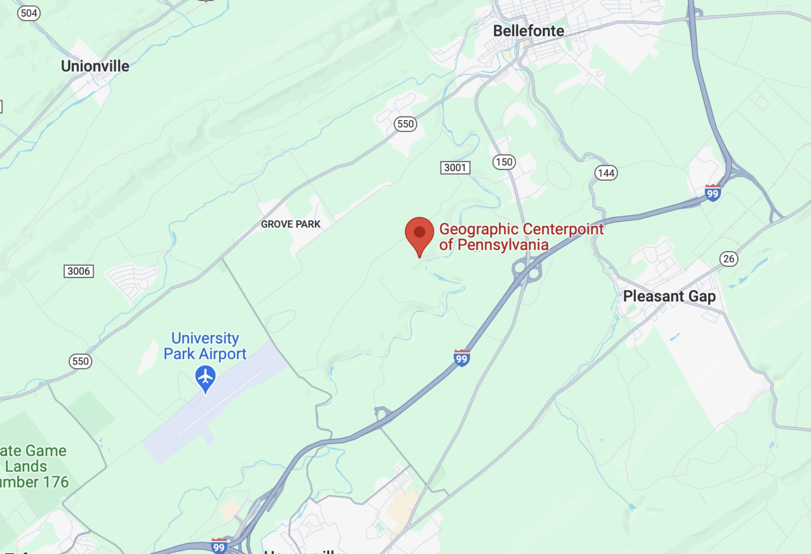

Workbench
Inspired by the Ham Radio Workbench podcast bunch, here are a number of projects that are on my workbench. Really, some of these are aspirational. And some aren’t really things that go on a workbench.
Science
With the April 8, 2024 total solar eclipse on the horizon, I’m working on two citizen science projects:
- A weak signal propagation reporter (WSPR) station to provide data to the HamSCI team about changes in atmospheric propagation during the eclipse. I will likely put my home station on the air. Whether I put a portable station, depends on weather conditions close to the eclipse.

- A portable radio telescope from the Radio JOVE project that I will deploy to help this group study the Sun and Jupiter. I’m planning to make this radio telescope portable, so that I can bring it to the Black Forest Star Party in September 2024.
Remote operations
The ICOM IC-7300 connects via USB to the Acer laptop for logging and digital modes. This unfortunately precludes the use of the RemoteTx.net service. That service requires that the rig be connected to a Raspberry Pi via USB. So, I want to get a USB/printer switch so that I can decide whether to control the rig remotely via RemoteTx.net or use it locally.
Modes and skills
Morse code
I took the first two CWOps courses in Spring 2020, but I have only made two CW contacts. I’m slow to copy, and it’s hard, and so I’ve gotten discouraged.
But I haven’t given up.
Satellite operations
The addition of the new IC-9700 makes satellite operations a new frontier to explore.
Station enhancements
NodeRed
I was experimenting with NodeRed in the Winter of 2022-23, but have taken my server offline temporarily.
Grounding
I plan to install a new/improved Earth ground for my electrical service. Once that is done, then I will tie my RF/antenna ground to it.
Events
W3E/N3S Middle of Nowhere
My friend K3YV has noted that the geographic center of Pennsylvania a is not far from State College. One day soon, we plan to activate that location with a special event station.
